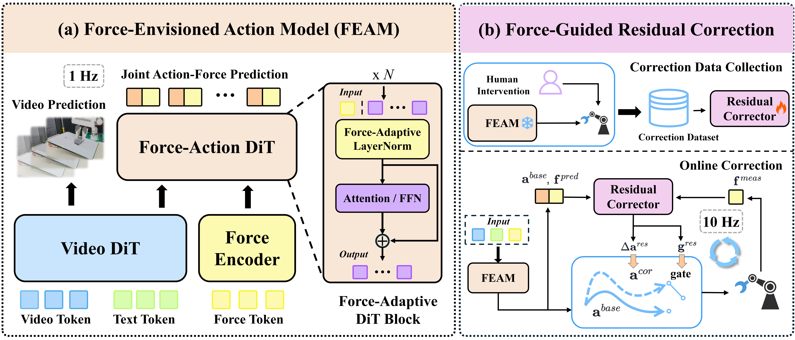
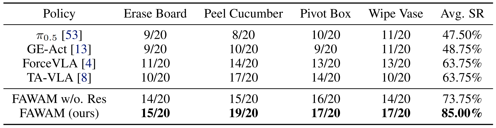

FAWAM: Force-Aware World Action Models for Closed-Loop Contact-Rich Manipulation
Abstract
Force signals provide critical interaction cues for contact-rich robotic manipulation. However, existing methods mostly use force as an additional observation modality, without fully exploiting its role in modeling future interaction dynamics or guiding execution-time feedback correction. In this paper, we propose FAWAM, a force-aware world action model that incorporates force information at three levels: perception, prediction, and closed-loop execution. FAWAM first encodes historical 6-axis force/torque signals to modulate action generation, then jointly predicts future actions and end-effector wrenches to explicitly model contact evolution. It further introduces a residual correction module that uses the predicted wrench trajectory as an execution-time reference to refine actions online based on real-time force feedback. Real-world experiments across multiple contact-rich tasks show that FAWAM improves the average success rate by 36.25% over vision-only baselines and 21.25% over existing force-aware baselines, demonstrating the effectiveness of our force-aware framework for robust contact-rich manipulation.
Method Overview

FAWAM consists of a Force-Envisioned Action Model running at 1Hz and a Force-Guided Residual Corrector running at 10Hz. The Force-Envisioned Action Model encodes recent force/torque histories into compact contact features and injects them into action generation through AdaLN-Zero-style modulation. It also jointly predicts future action and force trajectories, encouraging the model to learn the coupling between robot motions and their contact consequences. The Force-Guided Residual Correction module learns from human interventions and corrects the base action online with a residual action and an intervention gate. It uses the predicted force trajectory as guidance for online adaptation to unexpected contact changes within an action chunk. By comparing the predicted force reference with real-time force feedback, it provides timely residual corrections and improves execution-time robustness.
Experimental Results
Real-World Rollout Comparison
We evaluate FAWAM on four contact-rich manipulation tasks: erasing a whiteboard, peeling a cucumber, pivoting a box, and wiping a vase. Each task requires precise force regulation and adaptation to varying contact conditions. GE-Act is a vision-only baseline that generates actions from visual observations, while force-conditioned GE-Act extends GE-Act by adding force as an extra observation input. The videos below show representative rollout comparisons between these two baselines and FAWAM across the four tasks. All videos on this page are played at 2x speed.
Perturbation Rollouts Comparison
To evaluate the effectiveness of FAWAM's online residual correction, we introduce execution-time perturbations across all four tasks. The videos below compare FAWAM with and without the Force-Guided Residual Corrector. With online correction, FAWAM uses discrepancies between predicted and measured wrenches to adapt its actions and recover stable contact. Without online correction, the policy often fails to recover from these perturbations. All videos on this page are played at 2x speed.
Quantitative Results

Citation
@misc{he2026fawam,
title = {FAWAM: Force-Aware World Action Models for Closed-Loop Contact-Rich Manipulation},
author = {Haotian He and Zeyu Yan and Qipeng Liu and Ning Guo and Wenzhao Lian},
year = {2026},
eprint = {2606.08555},
archivePrefix = {arXiv},
primaryClass = {cs.RO},
url = {https://arxiv.org/abs/2606.08555}
}